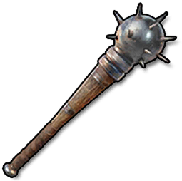

Weapons
Items · WeaponsMace

Mace / WeaponsAttack power60.0
Crafting recipe
Crafting recipeEach crafting batch produces 1 items. Materials below are required for one batch.


How to obtain
How to obtainLootObtained as loot
Rewards / ShopObtained from rewards or the shop
Recycling yield
Recycling yieldItem description
A heavy weapon with an enormous head. Slow but inflicts a lot of damage to the enemy.